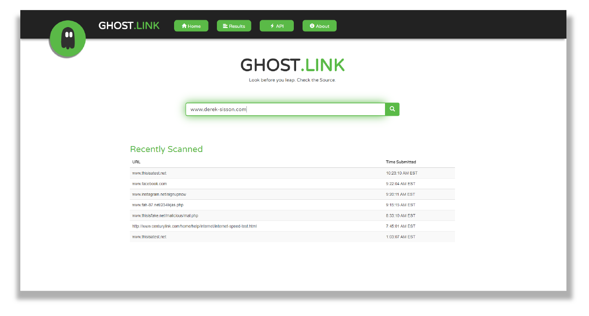

Ghost link
is an all-in-one URL scanning service that detects malicious websites using powerful file and network scanners. Maliciousness scores an appended to the outputs of the site's analyzers, quickly helping analysts determine if a URL is malicious or not. This was my group Senior Capstone project at the University of Cincinnati.
|
|
The Problem
If you’re a security analyst, tools like urlscan.io, urlquery.net and virusTotal are probably very familiar to you. Security professionals are required to use these several tools daily to analyze URLs and decide if it is malicious or not. The process of using multiple tools for a simple task impedes the process of the analysis phase. Scanning for any files returned from the URL is another essential step in this analysis phase that is slowed down due to the use of multiple tools.
So how do we fix this problem?
|
The Solution
Ghost Link gives security professionals a product that centralizes many of the features available in separate tools. This gives security professionals a “one-stop shop” that combines all of these tools into one efficient user friendly product that isn’t really on the market at the moment. ?
|
|
The Benefits
• Nearly 40% reduction in analysis time
• File carving capabilities
• Network scanning capabilities
• Maliciousness score indicator
• Ability to conduct further research as an analyst
|

|
The Expo & Award
During the 2018 University of Cincinnati IT Expo, Ghost.link was awarded the Western & Southern Award for IT Expo Presentation in Cybersecurity.